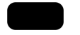
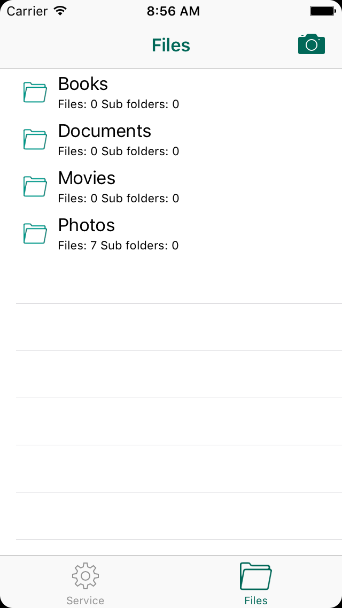

iOS几行代码让界面变圆角
tags: 开发随笔
最近有一些比较流行的应用，界面都是圆角的。比如Memopad,Pinterest之类的，都是。
琢磨了一下，发现这个其实很简单。我们只需要在UIView上做点功夫就可以了。
创建一个UIView的Category，名为UIView+RoundCorner,在头文件UIView+RoundCorner.h中声明如下：
#import <UIKit/UIKit.h> @interface UIView (RoundCorner) -(void)makeRoundedCorner:(CGFloat)cornerRadius; @end
在实现文件UIView+RoundCorner.h代码如下：
#import "UIView+RoundCorner.h"
@implementation UIView(RoundCorner)
-(void)makeRoundedCorner:(CGFloat)cornerRadius
{
CALayer *roundedlayer = [self layer];
[roundedlayer setMasksToBounds:YES];
[roundedlayer setCornerRadius:cornerRadius];
}
@end
使用方法
让某个UI元素变圆角
对所有UIView或者其派生类，直接使用该方法即可，比如下面的代码让一个UIButton变圆角了：
[btn makeRoundedCorner:12.0f];
疗效如下(为了让疗效看起来更明显，我把按钮弄黑了):

让整个界面变圆角
只需要在ViewContolloer中调用这个方法就好了，比如：[self.view makeRoundedCorner:12.0f];
如果你的ViewController在UITabBarController中,你只需要调用这个方法就可以让整个界面所有的界面都变成圆角的。比如
if (self.parentViewController) {
[self.parentViewController.view makeRoundedCorner:12.0f];
}
疗效如下：
